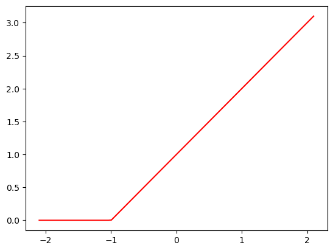
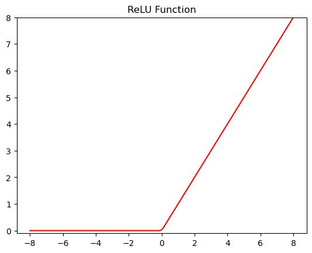
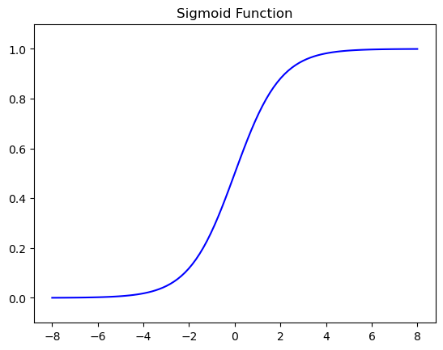
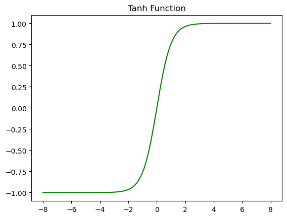

Redes neuronales como aproximadores universales#
Estructura básica de una red neuronal#
Una red neuronal es una función matemática que recibe entradas, las transforma a través de capas de cómputo y produce salidas. En una red neuronal estándar:
Cada entrada se multiplica por un conjunto de pesos, que son valores ajustables o parámetros.
Estas entradas ponderadas se suman y se pasan por una función de activación que añade no linealidad a la red.
Las salidas de una capa se convierten en las entradas de la siguiente, repitiendo el proceso hasta llegar a la última capa, que produce la predicción de la red.
Los pesos iniciales se suelen establecer de manera aleatoria, por lo que una red neuronal recién inicializada no realiza ninguna tarea útil: se comporta como una función aleatoria. La verdadera magia ocurre cuando ajustamos estos pesos para mejorar el rendimiento de la red en una tarea específica, en un proceso llamado entrenamiento.
Redes neuronales como aproximadores flexibles de funciones#
Con redes neuronales profundas, usamos datos observacionales para aprender conjuntamente tanto una representación a través de las capas ocultas como un predictor lineal que actúa sobre esa representación.
Al combinar múltiples capas, cada una con sus propios parámetros y funciones de activación, las redes neuronales pueden aproximar funciones altamente complejas. Esta capacidad es el núcleo del teorema de aproximación universal, que establece que una red neuronal con suficientes parámetros puede aproximar cualquier función continua.
Los bloques de construcción de las redes neuronales#
Las dos operaciones fundamentales en redes neuronales son:
Multiplicación de matrices: consiste en multiplicar las entradas por los pesos y sumar sesgos (biases). En las redes neuronales, esta operación es el núcleo del cómputo de cada capa.
Funciones de activación: funciones no lineales, como la unidad lineal rectificada (ReLU), permiten que la red capture patrones complejos. ReLU reemplaza los valores negativos con cero, lo que habilita a la red a aprender transformaciones no lineales.
Aquí hay una implementación simple de una función ReLU:
def rectified_linear(m,b,x):
y = m*x+b
return torch.clip(y, 0.)
Show code cell source
from ipywidgets import interact
from fastai.basics import *
def plot_function(f, title=None, min=-2.1, max=2.1, color='r', ylim=None):
x = torch.linspace(min,max, 100)[:,None]
if ylim: plt.ylim(ylim)
plt.plot(x, f(x), color)
if title is not None: plt.title(title)
plot_function(partial(rectified_linear, 1,1))

Para entender cómo funciona esta función, prueba esta versión interactiva y experimenta con los parámetros m y b:
@interact(m=1.5, b=1.5)
def plot_relu(m, b):
plot_function(partial(rectified_linear, m,b), ylim=(-1,4))
Como ves, m cambia la pendiente y b cambia el punto donde aparece el “gancho”. Esta función no hace mucho por sí sola, pero veamos qué ocurre cuando sumamos dos de ellas:
def double_relu(m1,b1,m2,b2,x):
return rectified_linear(m1,b1,x) + rectified_linear(m2,b2,x)
@interact(m1=-1.5, b1=-1.5, m2=1.5, b2=1.5)
def plot_double_relu(m1, b1, m2, b2):
plot_function(partial(double_relu, m1,b1,m2,b2), ylim=(-1,6))
Apilando y combinando funciones ReLU, las redes neuronales pueden crear mapeos intrincados entre entradas y salidas. Esto les permite aproximar funciones no lineales, lo cual es esencial en tareas como el reconocimiento de imágenes y el procesamiento de lenguaje natural.
Este mismo enfoque puede ampliarse a funciones de 2, 3 o más parámetros. La idea básica es que al usar múltiples capas lineales en un modelo, le permitimos realizar más cálculos y, por tanto, modelar funciones cada vez más complejas. Sin embargo, si simplemente apilamos capas lineales una tras otra sin introducir no linealidad, no aumentamos el poder expresivo del modelo.
Por qué múltiples capas lineales no son suficientes#
Veamos esto matemáticamente:
Transformación lineal: una capa lineal aplica la transformación
\[ f(x) = W \cdot x + b \]donde:
\(W\) es la matriz de pesos,
\(x\) es el vector de entrada,
\(b\) es el vector de sesgo.
Composición de funciones lineales: supongamos dos capas consecutivas, \(f(x) = W_1 \cdot x + b_1\) y \(g(x) = W_2 \cdot f(x) + b_2\). Expandiendo:
\[ g(x) = W_2 \cdot (W_1 \cdot x + b_1) + b_2 = (W_2 W_1) x + (W_2 b_1 + b_2) \]Esto sigue siendo una transformación lineal de \(x\).
Idea clave: La composición de transformaciones lineales sigue siendo lineal. Por eso, apilar capas lineales sin funciones de activación no mejora la expresividad.
Añadiendo no linealidad: la clave de las representaciones complejas#
Para superar esta limitación introducimos una función no lineal (o función de activación) entre las capas. Esto rompe la linealidad de la cadena de transformaciones y permite que cada capa aprenda aspectos distintos de los datos.
Un ejemplo es la ReLU (Rectified Linear Unit):
donde \(z = W \cdot x + b\).
Propiedades:
No linealidad: al convertir en cero los valores negativos, introduce un elemento no lineal.
Comportamiento condicional: funciona como un
if: devuelve 0 si la entrada es negativa y la entrada misma si es positiva.
Construcción de modelos complejos con capas y activaciones#
Con funciones no lineales, una red neuronal puede constar de:
Una secuencia de transformaciones lineales (capas).
Funciones de activación entre capas (como ReLU) que aportan complejidad.
Ejemplo de red con dos capas:
Primera capa:
\[ h(x) = \text{ReLU}(W_1 x + b_1) \]Segunda capa:
\[ f(x) = W_2 h(x) + b_2 \]
Ahora \(f(x)\) ya no es puramente lineal, sino una composición lineal + no lineal, capaz de capturar patrones más complejos.
Teorema de Aproximación Universal#
La no linealidad permite que una red neuronal aproxime cualquier función continua con la precisión deseada, siempre que tenga suficientes capas y neuronas.
Una red neuronal con al menos una capa oculta, un número suficiente de neuronas y una función de activación no lineal puede aproximar cualquier función continua en un subconjunto compacto de \(\mathbb{R}^n\).
Funciones de activación#
Las funciones de activación deciden si una neurona se activa o no calculando la suma ponderada de entradas más el sesgo. Son operadores diferenciables que transforman señales de entrada en salidas, y la mayoría introduce no linealidad.
Función ReLU#
La más popular, por su simplicidad y buen rendimiento en diversas tareas, es la unidad lineal rectificada (ReLU) (Nair y Hinton, 2010):
En palabras simples, mantiene los valores positivos y convierte en cero los negativos. La función es lineal por tramos y puede visualizarse fácilmente.
plot_function(torch.relu, title='ReLU Function', min=-8, max=8, color='r', ylim=(-0.1,8))

Cuando la entrada es negativa, la derivada de la función ReLU es 0, y cuando la entrada es positiva, la derivada es 1. Observa que la función ReLU no es diferenciable cuando la entrada es exactamente 0. En estos casos, se toma por convención la derivada lateral izquierda y se dice que la derivada es 0 cuando la entrada es 0. Esto es aceptable porque la probabilidad de que la entrada sea exactamente cero es muy baja (matemáticamente se dice que no es diferenciable en un conjunto de medida cero).
La razón por la que se usa ReLU es que sus derivadas se comportan especialmente bien: o bien se anulan, o bien dejan pasar el argumento sin cambios. Esto hace que la optimización sea más estable y mitiga el conocido problema del gradiente que desaparece, que afectaba a versiones anteriores de redes neuronales.
Función sigmoide#
La función sigmoide transforma entradas en el dominio \(\mathbb{R}\) en salidas en el intervalo (0, 1). Por eso a menudo se la llama función de compresión, ya que lleva cualquier entrada en el rango \((-\infty, \infty)\) a un valor en (0, 1):
En las primeras redes neuronales, los investigadores querían modelar neuronas biológicas que disparan o no disparan. Por ello, los pioneros del campo, desde McCulloch y Pitts (inventores de la neurona artificial), se centraron en unidades de umbral. Una activación por umbral toma el valor 0 si la entrada está por debajo de cierto umbral y 1 si lo supera.
Cuando la atención se trasladó al aprendizaje basado en gradientes, la función sigmoide fue una elección natural porque es una aproximación suave y diferenciable de una unidad de umbral. Las sigmoides aún se usan ampliamente como funciones de activación en las salidas cuando se quieren interpretar como probabilidades en problemas de clasificación binaria: puede pensarse en la sigmoide como un caso particular del softmax. Sin embargo, en la mayoría de las capas ocultas la sigmoide ha sido sustituida por ReLU, más simple y fácil de entrenar. Esto se debe a que la sigmoide plantea dificultades de optimización, ya que su gradiente se desvanece para entradas muy positivas o muy negativas, creando mesetas difíciles de superar.
Aun así, las sigmoides siguen siendo importantes. Por ejemplo, las redes neuronales recurrentes utilizan unidades sigmoides para controlar el flujo de información a lo largo del tiempo.
Abajo se representa la función sigmoide. Nótese que cuando la entrada está cerca de 0, la función sigmoide se aproxima a una transformación lineal.
plot_function(torch.sigmoid, title='Sigmoid Function', min=-8, max=8, color='b', ylim=(-0.1,1.1))

La derivada de la función sigmoide viene dada por la siguiente ecuación:
Obsérvese que cuando la entrada es 0, la derivada de la sigmoide alcanza un máximo de 0.25. A medida que la entrada se aleja de 0 en cualquier dirección, la derivada tiende a 0.
Función tanh#
Al igual que la sigmoide, la función tanh (tangente hiperbólica) también comprime sus entradas, transformándolas en valores dentro del intervalo \([-1, 1]\):
plot_function(torch.tanh, title='Tanh Function', min=-8, max=8, color='g', ylim=(-1.1,1.1))

Nótese que cuando la entrada se acerca a 0, la función tanh se aproxima a una transformación lineal. Aunque su forma es similar a la de la función sigmoide, la función tanh presenta simetría puntual respecto al origen del sistema de coordenadas.